Indonesia Trav-E-Logs©
| Bukit Lawang
|
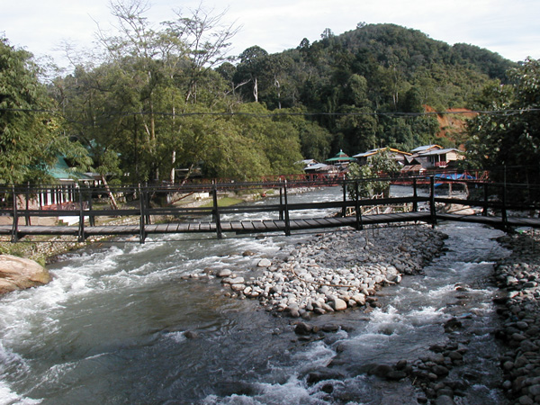 |
| back: Berastagi | Bridge to Bukit Lawang |
================================= Bukit Luang with it's jungle trek offerings and the Orang-utan Rehab center is a rather popular destination on the backpacker circuit. It is a small village in the jungle along the banks of a rather small creek, which in places is wide and deep enough to float downstream in a rented innertube. =================================
July 12 - 14, 2003
Arrived in the evening and resisted the offers to immediately sign up for a multi-day trek. Spent the following day around the village and making inquires as to which guides lead the more interesting treks. Signed up for a two-day trek with a highly recommended guide. The instructions say just bring your camera, swim suit, torch, and a good pair of hiking shoes as all food is provided.
It was a great experience. I always love seeing massive trees, and we saw many. As We hiked in the jungle, the guide would stop occasionally to discuss features we were not familiar with. Often he pointed out things we all would have missed on our own. We saw quite a few Orang-utan in the wild, and photographed several; Wish my camera had more than 3X zoom. The meals prepared for us were better than expected. After setting up camp for the evening, several seven- to eight-foot monitor lizards came out of the jungle to visit the river, walking right through our camp site.
Photos below: A restaurant overlooks the river, and guides prepare our lunch on the 2-day trek; A tree-hugger's tree with my day sack providing scale, a jungle lizzard, and enjoying evening meal by river; our camp, and camp visitor; My best, and only Orang-utan shots; Evening meal, mud burrowing wasp, and common monkey (macaque).
| 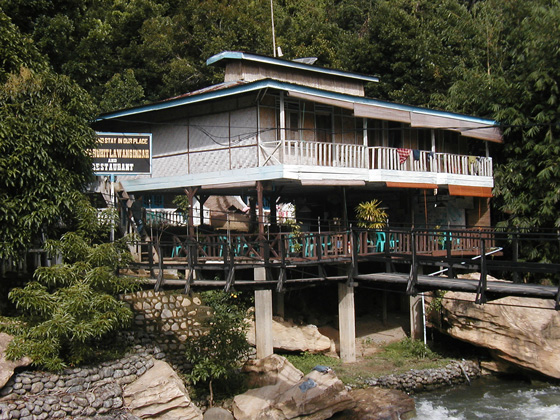 | 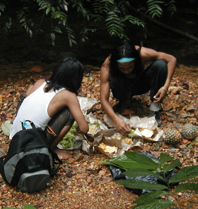 |
| 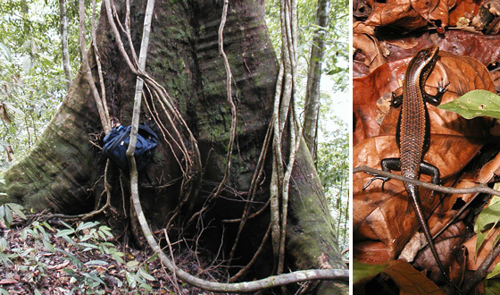 | 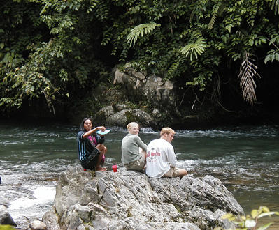 |
| 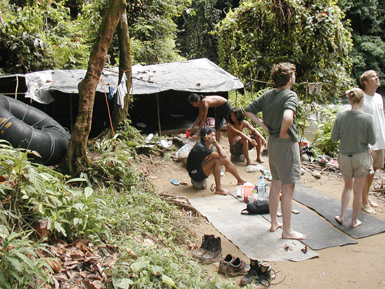 | 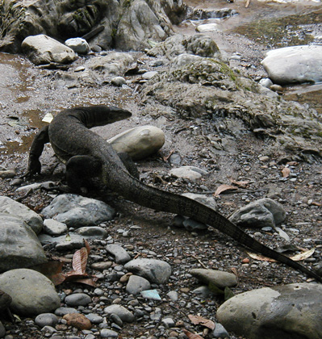 |
| 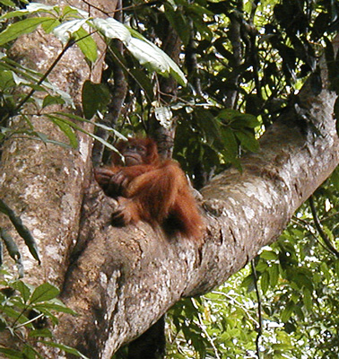 | 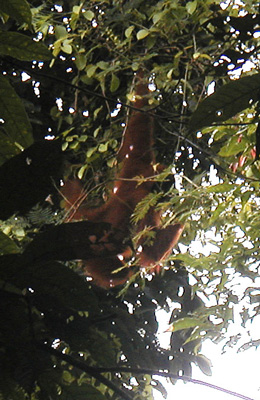 | 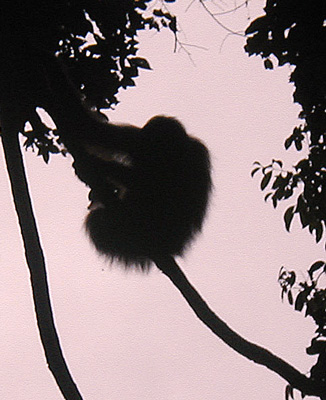 |
Decided to return to Medan and take a Pelni Ship to Java rather then travel by bus again on the Trans-Sumatran Highway. Enjoy! Bill ------------------ |
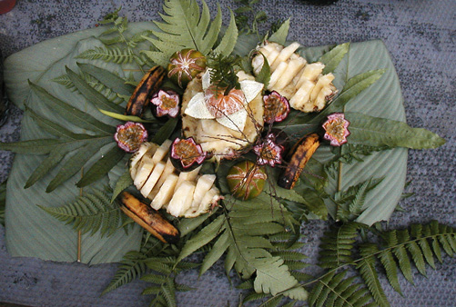 | 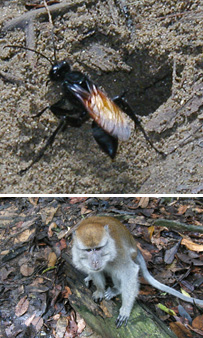 |
Email me at the juno.com address "dancer2SEAsia"
"Travel is Fatal to Bigotry, Prejudice, and Narrow-minded ness" .... attributed to Mark Twain
| next: Sumatra2Java |
| back: Berastagi |